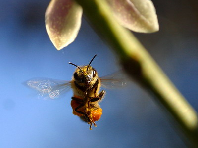

超感不是神通
冯冯
美加有很多心灵家，颇具超感，英文称之为Psychic，这些超感心灵家，以女子为多，她们有心灵协会，定期聚会交换心得，其中不少公开营业，为顾客占吉凶。美加电视上常放映她们的示范广告，她们现场服务，回答观众电话的询问。每分钟收费从十元美金起，任何人都可以打电话去问任何问题。大多数是问爱情、婚姻、事业、财运，只须报出姓名与生日，就能得到详尽的答案，惊人的准确。
这些心灵业者的营业，是合法的，没有人指责为邪信。当然有人信，也有人不信，也有人认为是串同的表演，也有人视之为游戏，也有人承认她们真有超感，而她们也没自称是“神通”，只说是天赋第六感，至于是正是邪，就得看其动机与目的是正是邪啦。
有一些人，超感本能比一般人为强，特别是女子，超感天生比男子强，不幸往往被宗教人士斥为妖巫，在中古时代，把她们当作女巫来烧死，佛教也囿于“正信不尚神通”的佛训，因而斥责超感者与是信。其实，超感不是神通，只是本能之一！和眼识耳识等等本能并无不同，有些人天生超感较强，有些人习静心静也增加超感，人人都有预感本能，只是有多数不予以发展，有些人视超感为“妖邪”，因为佛教说“正信不讲神通”。
第六感，或超感，看似神奇，其实只是本能的一种，而且，距离佛教修成的第八识阿赖耶识－大圆镜智，还远得很！超感却是人人本来就有，不必修行也有的本能，动物界的超感，比人类更大。例如：蚂蚁能预知暴风雨，因为超感到空气中的湿度与气压即将改变，猫狗牛马猪羊，都能预感大地震，苍蝇能嗅到数百尺以外的食物，骆驼与马，能找到沙漠中的地下水源，猫狗能回到千里以外的故居，蜜蜂能嗅到很远的花蜜，老鹰能看见数里以下地面的隐藏兔鼠....种种超感，都比人类先进，都超越人类太多，人类唯一优越于动物的，是大脑与两手！在超感本能上，人类是最笨拙的！ 佛教此一句是误引的，佛经原文是“正信不尚神通”，不是“不讲神通”。“不尚”是不重视、不滥用、不以为时尚，不是连讲也不准讲。上文说过，超感人人有，多少各人不同而已，并非神通！如果能用超感去预测世间，也只是大脑的计算机综合研究了资料而得的结论，不是什么神通，何妖邪之有？如果再感觉到有灾祸而予以预先警告，这也是坏事么？若也算坏事，那么刘伯温的烧饼歌、十六世纪的法国炼金术士诺特丹莫斯的预言，也都是妖邪了？佛教人士未免太矫枉过正了！
佛经哪一本不讲神通？佛陀就讲过学佛可以获得五大神通。祂说“正信不尚神通”，可没说“不讲神通”，祂并未否定神通，只是告诫不可滥用神通，祂也并未说第六感是神通，也未说它是妖邪！
修行人很可能把第六感超感扩展为“天眼通”。一般的超感，却不是佛教的“天眼通”。一般的超感，可以从外道修成，也可以自修而得，有很强超感的人，特别是那些职业超感者，很少是从修佛而成，也很少是信佛的，她们具有超感，好比是别的动物的超级嗅觉听觉而已，并不是有第六感就成了佛。一般有超感强烈的人，也只是凡夫俗子，也仍是诸漏未尽、七情六欲、三毒俱全的无明俗人，别以为她们能准确预言，就是“天眼通”的佛菩萨，须知，外道邪魔也有神通，而且可能比佛的神通更大。但是，非正信的神通，带不来正果，可能只产生魔道的恶果！至于那些靠出卖超感维生的业者，根本还不是神通，只是小小技俩而已，与佛魔都无关！更不是修为，正信者应认清，不必因他们特异功能就崇拜他信他，就算是已经修成五大神通，也未得证佛果！何况不是神通？谁若宣布自己已经得证神通与佛果，则可能不是欺人就是自欺了！不妨多读正信佛经再说！
美国不少大学设有“超常心理学科”，研究超感（例如公爵大学（Duke U）），希望能多发展人类的超感本能造福社会。这与佛教无关，不过，不妨打开心眼来！别那么气量狭窄，把人类本能或技术也视为邪魔外道！
扯回自己，二十多年写过对天眼的“追寻”与“实验”，只因尚未证得天眼，所以才说“追寻”，尚在“实验”。略有些微得的“第六感”，也并不比任何人为多，实在尚未得到“天眼通”！也毫无神通，并非自谦，这是事实，自从搞了作曲，就老早放下此种“追寻”了。也发现了“超感”实在只是本能，若无学佛修持，也是得不到佛家天眼通的。自己不算是个修行人，也就无意再研究下去，恢复“平常心”，这是当前的心态，至于能诊病，只是超感而已，无啥希奇，很多人都能！而且，也未必准确。
原载《佛网》网站
2000 年 ── 2002 年